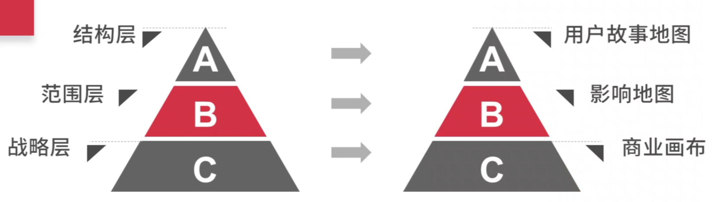

业务全链路项目管理
一、全链路项目管理
A、产品价值（探索）
1.思路：目标->做点什么->怎么落地
2.分层：
- 战略层->范围层->结构层
- 商业画布->影响地图->用户故事地图

3.商业画布

4.影响地图（可视化项目范围、假设）

5.用户故事地图

B.产品价值（验证）
1.验证的逻辑
- 风险排序
- 不断降低风险
- 分阶段、低成本、降低风险
2.风险最大的地方是价值主张：有没有需要
3.其次是解决方案
4.针对价值主张做访谈：
- 目标客户->访谈->调整
- 验证解决方案：向客户展示Demo，通过讲故事介绍给客户，收集反馈，被访谈者的兴趣点，展示你的亮点
- 测试产品价格：用你希望卖的价格来问
5.MVP（最小化可行性产品）
- 目的：以最快速度最小代价获得真实用户的反馈来验证商业模式
- 不完美：不要想面面俱到（缩小范围有助于传递你的核心价值主张）
- 完整：可行的、可用的、有价值的
- 尽快
C.产品价值（反馈）
1.建立数据反馈
- 1）第一关键指标：当前阶段高于一切需要集中精力的数字，反映战略目标，可以调整任务的
- 2）产品环节的数据：热力图、页面停留时长、跳出页面等
- 3）销售环节的数据：反映销售产出，市场接受程序（客户增长、付费转化率等）
- 4）市场环节的数据：推广渠道等
- 5）产品研发环节的数据：组织自身的情况，从需求到交付过程中的流转情况，发现瓶颈
2.建立客户反馈渠道：官网、QQ、微信等
3.建立客户反馈：销售、产品、市场、运营、其他（需求池、排列优先级提高客户需求优先级）
4.建立组织反馈（5Why）
- 周期性回顾
- BUG复盘
- 关键问题复盘
5.建立调整机制

二、商业画布
A.商业画布
1.商业画布
- 1）商业画布来自商业模式新生代，由亚历山大·奥斯特瓦德、伊夫·皮尼厄著
- 2）这是用来设计商业模式一个很经典的框架
- 3）许多精益创业的理论也是基于这个工具
2.客户分类
- 1）为了更好的满足和客户，我们应该把客户细分
- 2）依照客户属性、行为、需求来划分：行业、营收、公司规模、地区
- 3）选择或不选择哪些客户群体
- 4）针对我们要服务的客户，制定相应的服务
- 5）根据商业模式分析客户分类
- 大众市场：消费电子
- 利基市场：供应与采购商
- 区隔化市场：银行信用贷款
- 多元化市场：可以服务两种需求不同的客户。亚马逊服务
- 多边平台：服务两个以上相互依存的客户。信用卡公司
3.客户细分与分析
- 1）每个细分客户
- 他的工作是什么
- 他在这工作能得到什么
- 他在这工作的痛点是什么
- 2）提醒
- 不同的用户、不同的情境，应该画出不同价值主张
- 用户素描->价值主张->商业模式
- 优先级分析、价值适配
4.价值主张
- 1）能为客户创造价值的服务或产品
- 产品跟服务是什么
- 能带来的好处是什么
- 能解决的痛点是什么
- 2）价值主张：新颖、性能、订制化、把事情做好、设计、品牌与定位、价格、降低成本、减少风险、可达性、便利性可用性
5.将价值主张与客户细分对应

6.卓越价值是什么
- 1）是商业模式的一部分
- 2）聚集顾客最重要的任务、痛点、获益
- 3）聚集客户没完成的任务、痛点、获益
- 4）锁定少数客户任务、痛点、获益，做到极致
- 5）不只考量功能还会注意情绪性与社交任务
- 6）用顾客一致的角度评量
- 7）专注很多人都有的任务、痛点、获益，或者是让某些人愿意付高价的项目
- 8）在客户在乎的任务、痛点、获益，与竞争对手有区别
- 9）有一个大幅超越对手的表现
- 10）很难复制
7.设计路径：推力与拉力
- 1）推力
- 设计：关键资源
- 发想：价值主张
- 目标客户
- 用户画像
- 细化价值主张
- 2）拉力：很重要+很具体+尚未满足+有利可图：高价值
8.消费者关系
- 1）客户与公司建立的关系类型
- 2）类型：
- 个人助理：销售
- 专用个人助理：私人客户代表
- 自助服务：客户跟公司没直接关系，消费者完全自助
- 自动化服务：用自动化模拟个人助理的能力，例如产品推荐
- 社区：在线交流
- 共同创作：youtube
9.渠道
- 1）如果接触到他的细分客户，传递价值主张
- 2）渠道是跟客户的接触界面
- 3）功能：提升客户的认知、评估、购买、接受服务、售后等环节
- 4）区分：直销、非直销
- 5）考虑：哪些渠道有效、如何触达、如何整合、渠道成本……
10.核心资源
- 1）首先是保证商业模式顺利运行最重要的资产
- 2）分类：实物资产、知识产权、人力与金融等资源
- 3）先进技术往往是互联网产品的核心资源之一
- 4）全面性：还需覆盖分销渠道与客户关系的维护
11.关键业务
- 1）定位：最重要的活动
- 2）分类：生产、解决方案、平台等（结合自身的特点与优势）
- 3）取舍：结合核心资源与客户关系等一定会有选择
12.合作：
- 1）提高产能
- 2）降低风险
- 3）竞争对手也可以战略合作
13.成本
- 1）描述商业模式所有成本
- 2）创造与提供价值、维护客户关系、取得关键资源等都需要成本
14.收入
- 1）描绘从每个客户群体获取的收入
- 2）要提供什么价值，客户才愿意付钱
- 3）收入可以有不同定价模式：固定、议价、拍卖、市场定价等
- 4）收入方式：一次性付清、经常性收入
B.商业画布-战略
1.商业模式环境
- 1）商业模式是在特定的环境下被设计和执行的
- 2）所以需要理解组织环境：
- 市场影响力
- 关键趋势
- 宏观经济影响
- 行业影响力
2.从战略角度审视自身商业模式动作的环境

3.评估商业模式
- 1）定期评估
- 要像年度体检一样定期评估商业模式是一项重要的管理活动
- 因为唯一不变的就是变化，需要对变化进行管理
- 2）由内而外地分析来自外部的影响力
- 从总体角度评估一个商业模式和从每个模块角度评估是两项互为补充的活动
4.利用SWOT分析
C.蓝海、多种商业画布
1.蓝海-四项行动架构
- 1）删除：你的行业，哪些长期相互竞争的要素是可以删除的？
- 2）提升：哪些要素应该大幅提高到行业标准之上？
- 3）削减：哪些要素应该被大幅削减到行业标准之下？
- 4）创造：哪些行业中从未提供的要素是应该被创造出来的？
2.通过四项行动架构探究你的商业画布
- 1）探索成本的影响
- 哪些活动、资源和合作关系的成本最高？
- 如果减少或剔除某些成本因素，将会产生什么影响？
- 在减少或剔除高成本的资源、活动和合作关系后，你会如何用成本更低的元素来弥补它们的缺失导致的价值损失？
- 新计划的投资将创造出什么价值？
- 2）探索价值主张的影响
- 哪些相对价值较低的功能或服务可以剔除或减少？
- 增强或重新再造哪些功能或服务可以产生一种有价值的新体验？
- 在价值主张上的变化将对成本产生什么样的影响？
- 价值主张上的变化将如何影响商业模式的客户侧？
- 3）探索客户的影响
- 你应该专注哪个新的客户细分群体，应该减少或剔除对哪个客户细分群体的关注？
- 新的客户细分群体需要你帮他们解决什么样的问题？
- 这些客户希望我们如何接触他们，和他们建立什么样的关系？
- 服务这些新的客户细分群体将对成本产生什么影响？

3.管理多种商业模式

D.案例

三、影响地图
1.影响地图是通过回答以下4个问题而生成的一个思维导图：
- Why，为什么？
- Who，谁？
- How，怎样？
- What，什么？
2.影响地图的例子

3.应该包含时间
4.Why目标
- 统一认知
- 便于决策
- SMART：明确的、可度量、面向行动的、现实的、有时限的
5.Who
- 谁能帮助这个目标
- 谁会阻碍这个目标
- 谁会被这个目标影响
- 谁是我们的消费者或者用户
6.Who——外部
- 早上乘坐地铁上班的30岁以下年轻男性
- 互联网企业的运营组长
- 制造企业的生产线负责人
7.Who——内部
- 内容运营
- CEO
- 销售
8.How
- 帮助达成目标
- 阻碍达成目标
- 行为有冲突
- 行为有依赖
- 看到风险
- 排列优先级
9.What
- 联系相关行为对目标的影响
- 行为所处的位置和影响的人
10.排列优先级
- 有什么关键的要素会在形式前阻止我们
- 某处是否有高价值并且唾手可得的影响
- 哪些关键假设需要验证
11.案例

12.易于建立“开发—测量—反馈”循环
四、用户故事地图
1.一个审核运营的反垃圾故事

2.干了哪些事

3.每天开始做事情的顺序

4.归纳看主要做了哪些事情

5.细化所做的事情

6.估算：确认需求可行性

7.分一下版本

- 划分优先级：如果没有这个功能这个版本就无法使用
- 版本划分也不是固定的，可能调整
8.头脑风暴、排列顺序、提取关键步骤、细分、估算、版本划分和取舍
9.为什么使用用户故事地图
- 达成共识：文档评审不代表达成共识
- 少开发功能：想要的功能总是比你能投入开发的资源多（不是增加输出，而是做正确的事情）
10.注意事项
- 用户故事是关于问题解决方案的讨论
- 记录结果
五、规模价值阶段
A.什么是规模价值阶段
1.什么是规模价值阶段
- 1）已验证产品价值
- 2）收入增长超过成本增长
- 3）用户数DAU和单个用户贡献ARPU都在增长
2.规模价值阶段侧重点
- 1）替代化运作的现象：开始批量投市场运营、销售、客服等等
- 2）这其实是一个非常重要的管理产生价值的阶段
- 3）关注点
- 搭团队
- 成长体系
- 工作流
- 数据流
B.工作流设计-顶层设计
1.“三流”
- 业务流：产品流程，设计一个用户用你产品的体验旅程（种子用户测试）
- 工作流：让业务正常良好的运转起来，如何让背后的业务团队动作协同起来
- 数据流
2.工作流
- 1）工作流基于业务流展开
- 2）一个组织要运作，他会有
- 目标
- 计划
- 协同
3.目标：SMART原则
- 明确性：目标要明确、具体
- 可衡量性：有确切的标准来衡量目标是否完成，完成了多少
- 可达成的：目标必须是可以达成的
- 相关性：目标必须与执行人的本职本岗工作相关
- 时限性：目标要有确切的完成时间限制
4.共创商业画布：彼此想法，拉回一个水平线
5.法官模式
- 管理层共创商业目标（共创商业画布）
- 商业画布=基石，达成目标
- 让大家统一认知，发挥主观能动性

6.顶层目标的设定跟团队、组织架构、工作模式有很大关系
7.业务战略->年度规划->季度规划->1-2M（月）Review季度目标->每周同步（周会就问题而展开）->沟通协作->产出，Scrum

C.工作流设计-精益思想
1.精益思想（创造尽可能多的价值）
- 1）定义价值
- 2）创造价值（减少浪费，更多贡献）
- 3）缩短时间（在不增加资源的情况下）
2.拆业务点
- 从业务流看
- 端到端
- 细分维度（某一类客户）
3.部门间协作，提高交通
4.注意：
- 1）整体看，整个生命周期的去看，不要断层
- 2）整体从另一个维度的’拆’（端到端的工作流去拆）
- 3）提高共同目标感、跨越鸿沟、加强沟通、透明和协作、从而提高交流
5.不同部门之间是否同步，定义一定要明确
6.虚拟组：关注一定的聚集目标，提高共同的目标感，跨越组织部门的鸿沟
7.价值流图（一环到一环，描述整个生产过程中从原材料到仓储物流到出库的完整业务流程，发现浪费，创造价值）
8.看板（通过在制品数量发现瓶颈在哪里）

9.关注内在，提高团队工作效率
- 多次重复劳动，自动化？
- 多环节沟通，简化、自动化？
D.数据流
1.关注的指标：
- toC：拉新、活跃、付费、留存
- toB：客单价、客户数、消耗、续费
2.业务环境决定关心的当下指标
3.组织协同数据
4.明确指标定义
5.数据是怎么形成的
6.报告是怎么形成的
E.延展部分
1.可持续性
- 1）市场、科技都在随着时间发生变化，一定节奏的审视自己的业务更新商业画布是很有必要的
- 2）触发Review的一些因素
- 社会经济趋势
- 主要竞争对手
- 科技/技术变革
- 上下游供应链
- 政治文化等
2.财务价值
- 1）什么是财务价值
- 盈亏平衡
- 能给股东带来预期价值收益
- 2）财务价值的特点
- 持续经营
- 扩大经营、做更大
实战：网易电商项目管理
A.七个安全（一）
1.站会的改进
- 1）认错、站会制度、全过程观察、纪要会后即发
- 2）早上各组内站会、周二周四上午11点20十五分钟主管站会
- 3）站会纪要、项目状态更新
2.项目时间轴的迭代改进
- 1）撕出来的项目排期
- 2）关键评审时间点、依赖约定、冻结时间、灰度发布等

3.不那么简单的时间轴
- 1）进度计划应包含，关键事件、里程碑、依赖、约定如是否有冻结等、交付产物及时间、节假日！人员请假！风险等备注
- 2）工作量估算要靠谱，计划时常更新检视
- 3）孙子兵法：夫未战而庙算胜者，得算多也；未战而庙算不胜者，得算少也。多算胜，少算不胜，而况于无算呼！
- 4）要压缩，可以找出关键路径并缩短。加班、加人、砍需求、项目经理跟进力度加大，压缩到满足需要为止
- 5）高优先级关键路径、工欲善其事必先利其器、正确的人出现在正确的岗位。实在不行，还可以找大牛。找新技术
- 6）坦诚告知。降低目标期望。范围、进度、质量平衡。至少努力尝试过
4.项目回顾会的迭代改进
- 1）会议流程
- 便签纸准备
- 写小纸条
- 小组讨论
- 分组总结陈述
- 2）你所知道的技术负责人有哪些
- 3）挑出10%重点关注及改进
- 希望多做点啥
- 希望少优点啥
- 尝试
- 4）剩余90%汇总
- 多做点啥
B.七个案例（二）
1.大小需求评审
- 1）拆分为大小评审
- 小评审
- 大评审及排期确认会
- 2）移动评审委员会
- 受理紧急任务申请
- 受理项目变更申请
- 委员一票否决权
- 委员会组成（开发领导等）
2.冻结制度
- 1）产品需要懂得什么时候克制，APP更新非常麻烦
- 2）需求冻结制度
- 3）代码冻结制度
3.技术负责人制度
- 1）某功能点或重点需求
- 2）自荐或任命技术负责人
- 3）明确公示：权利、义务、福利
- 4）克服社会压力
C.反思回顾
1.项目经理技能：
- 1）内容保持中立（术业有专攻，保持敬畏心）
- 2）听（用心去听，保持同理心，聆听的层次）
- 3）问（学会提个好问题）
- 4）复述
- 5）总结归纳
2.生于忧患死于安乐
- 1）促进改变的动力—风险意识
- 2）未雨绸缪和杞人忧天的区别

3.识别风险
- 1）常用技术：
- 经验积累与分享
- 头脑风暴、SWOT
- 过程跟踪分析法
- 2）越多越好，越具体越好
4.风险分析
- 1）概率影响矩阵
- 2）对风险概率进行等级评定（极低、低、中、高、极高）
- 3）影响项目目标的哪个方面（质量、进度、成本），影响程序等级量化
5.风险应对
- 1）回避：避开（裁剪范围、放弃功能、终止项目等），可能留下技术债
- 2）转移：选用成熟方案、购买保险、外包合作等
- 3）减轻：备份冗余、防范措施等
- 4）接受
6.风险监控
- 1）负责人
- 2）执行风险应对措施
- 3）当前状态

7.改变措施落地利器—戴明环

8.下一轮的涅磐
- 冲突未必不好
- 适时搅一搅浑水
- 约定汇总-白纸黑字的压力
- 万金油：事上练，知行合一
实战：打造团队实战分享—网易云信、七鱼
A.从0到1的业务
1.业务初期项目经理可以做些什么？
- 1）辅助业务成功！
2.项目经理的职责是什么？
3.MVP（minimum viable product，最小化的可行产品）
- 先梳理
- 确认最小集
- Do it！
4.搭班子
- 靠谱的人：老大、团队和组织结构
- 组建核心团队
- 核心层有不同的文化：主动获取信息
- 一双看不到的手（引导合作模式，工作流程）
- 注意：切忌经验主义照搬主义，上一套大而全的；梳理出你认为合适的工作流程和合作模式；注意人数和工作量的陷阱（误区）；’三流的leader四流的下属’；
B.关于愿景使命
1.关于愿景
- 1）看起来很远很虚的东西
2.工作流

3.近期目标符合周期目标吗？符合长远目标吗？
4.我们是谁？我们的优势是什么？未来要成为什么？
C.团队迅速扩张
1.建立培训体系
- 要什么What
- 谁来做Who
- 形式Way
- 怎么验收How

2.扩展
- 1）新人关怀
- 真诚的欢迎
- 全面的入职引导
- 安排 mentor（责任、标准）
- 2）细心观察、正向引导
- 第一次就纠正
- 鼓励的行为及时公开肯定
- 信息流的汇聚
项目管理实战性心法
一.项目管理实战心法
A.PM学沟通
1.一线开发：只有25%的时间花在真正写代码上
2.开发leader：70%的bug都是沟通引起的
B.“冰山”下的沟通，你ready了吗？
1.干系人期望管理，是PM非常重要的基本功：信息、数据、邮件、会议，但这些不够
2.冰山下都藏着什么？（乔哈里之窗）
- 我不知道你怎么想的
- 你不怎么我怎么样的
- 我们都不知道别人怎么想的
3.启示：
- 主动扩大彼此的“公开区”
- 让冰山下越来越多的东西得以见光
4.PM要扩大团队的“公开区”

5.警惕团队开始败坏的信号：
- 私下吐槽无数，公开又不讲
- 都是别人的问题，跟我无关
- 思维固化，丧失活力
6.PM要创造一个安全的环境，如Under Table的话桌面上谈
C.拆掉“部门墙”，拒绝中间商
1.问题：
- 沟通基本靠喊，谁嗓门大听谁的
- 来来回加的邮件，措辞严密反复斟酌，据理力争打击对方
2.我们还在同一个频道上吗？（鸡同鸭讲）
- 使用了不同的语言
- 使用了不同的频道
3.拆掉部门墙，靠的是真正的“听”
4.沟通=10%说+90%听

- 下载：固守自己的边界
- 事实：到达边界，去了解事实真相
- 同理心：在乎对方的感受，他的深层次诉求
D.暗流中的“礁石”，说还是不说？
1.问题：
- “暗礁”，是指被决策者忽略，但实际上又有重大影响的问题
- 说还是不说？这是个巨大的考验
- 直接说问题？直接给解决方案？
- 委婉说问题？委婉给解决方案？
- 说这个会不会不高兴？这会不会像打小报告？这会不会影响到别人？
- 害怕碰壁、害怕尴尬、害怕惩罚
- 害怕没回应、害怕被拒绝、害怕谈不拢
- 不确定自己是不是对的
2.“3D雕塑”
- 运用素材、线条、小玩具、小物件，摆出来
- 客观中正的呈现现状
4.成为一面镜子，让TA自己看见
- 当决策者真正看到，自我边界之外，其他人在经历什么时
- 注意力结构就开始调整，这会给环境带来深刻的变化
E.越过三个雷池
1.沟通从“聆听”开始，改善团队和组织土壤

2.PMO=组织中的连接器
二、教练技术
A.PM为什么要学教练
1.项目经理的职责
- PMO是业务最重要的合作伙伴
- PM，一手业务目标达成，一手团队健康发展
2.人和事，是一体两面，无法分开去看
3.项目管理VS教练

B.教练是什么
1.教练是什么
- 教练是一种基于聆听的深度对话方式
- 教练的核心意图是帮助他人更好的思考
- 工作生活如此繁忙、焦虑，身处压力重重的环境下，我们很少停下来思考真正重要的是什么以及如何实现
- 教练帮助他人进行积极思考，深度反观，同时通过设计行动和管理进度来帮助Coachee真正付诸行动
2.教练是一门“聆听”的艺术
- 通过深度聆听去创造
- 一个深度思考的空间
3.教练的聆听水平影响着：
- 投入的关注度质量
- 思考空间的质量
- 其中发生的所有行动
4.当我们的常规方法不生效的时候，真正思考问题本源在哪里
5.盲点就像自己给自己创造的盒子
C.如何快速上手教练
1.“3D雕塑”，来自U型理论，沙盘游戏
2.将情况可视化：呈现你工作或人生的场景，你自己知道那代表什么就行了
3.是一个多维度的思考框架
- 东方（爱人）：最喜欢哪个部分？有什么其他的情绪浮上来？有什么不爽？发现最不爽的部分，自我进化的出发点
- 南方（战士）：前进路上，你正在面对的关键冲突和艰难真相是什么？对真相更深层的认识
- 西方（魔法师）：在这个情景下，什么正在生成？什么正在结束？拿变化的眼光来审视你摆出来的东西，非常有用的转化型思考方式
- 北方（君王）：如果这个情境是为了学习而设计，它在教你什么？你的人生的目的是什么？
4.根本性的转变，从自己看见开始
5.团队教练——集体3雕塑
D.总结
1.教练提供多角度思考框架
- GROW模型：通过沟通引导对方找到目标，分析现状，自行提出达到目标的方案，激发对方意愿使其采取行动以达到目标

2.教练提供长期支持与陪伴
- 创造一个对话思考空间，支持个人和团队自我进化
- 以更好的达成长期目标
三、PM的核心竞争力
A.PM的核心竞争力
1.项目经理的“招式”与“内功”
- 项目管理并不只是一种硬技能，更是一项软实力
- 更重要的不是招式，而是内功
- 知识和技能并不能构成项目经理的核心竞争力
- 要在特殊时间协调、运用、整合
- 围绕着：业务目标达成、团队健康发展
2.什么是PM的核心竞争力？
- 1）PM有什么？除了责任，什么都没有
- 2）PM的核心竞争力=非职权领导力
B.六力模型
1.执行力
- 1）执行力，俗称“靠谱”，是项目经理的立身之本
- 发现问题没人管，跳进去主动担责（担责）
- 言必行，行必果，有头有尾，有始有终（闭环）
- 懂得赢得信任，也懂得不辜负（放心）
2.信息力
- 1）项目经理处在信息枢纽的位置：大数据时代，谁掌握信息？谁就拥有power
- 2）正式信息：设计信息互通机制，周会、部会、周报、数据平台、邮件列表、通讯群
- 3）非正式信息：让信息自动流向你
- 好奇，关心，真诚，友善=>信任基础
- 链接多了，覆盖广了，自然会形成规模效应和网络效应
3.感知力
- 1）感知力建立在信息力的基础上，对冰山下的隐性信息的敏锐度
- 2）感知=“闻”味道
- 关注行为->意图->深层需要/感受
- 感知团队中的气场，感知团队外的风向
- 3）找到四两拨千斤的杠杆点：问题解决者->风险管理者->治未病
4.透明力
- 1）想要改善什么，就把什么透明出来
- 2）共同看见，才能把大家的集体关注力调动起来

5.影响力
- 1）区别于权力，影响力是一种柔性的力量
- 2）没有一毛钱权力，依然可以四两拨千斤
- 3）影响力的建立，是聚沙成塔的过程
- 4）重点在于“听”，而不是说（听是一种调频）
- 5）之于个人，就是说服力，说的话抓耳朵
- 6）之于群体，就是感染力，说的话有分量
6.整合力
- 1）PM是除了总负责人之外 ，唯一站在全局视野上的人
- 跨部门、跨角色，整合资源去实现全链条的共同目标
- PM功能非常跨界和多元，在大前提下，没有太多限制

C.总结
1.六力模型是知行合一的整体

2.体、机、用
- 1）体：本体，机：对应的知识技能及用途，用：效用
- 2）最难掌握的是便是这个“机”，“时机”+“环境”+“条件”
- 3）在一个环境中总结出来的最佳实践，套在另一个环境中未必适用
- 4）对“机”的把握是一种非常稀缺的能力
- 5）它难以精确描述、难以传授，也因此变得不可替代
3.PM的自我修养
- 1）PM的核心竞争力，必须也只能在实战中才能炼就
- 2）每关经历的煎熬，都是锻炼，是跃迁到更高的层级必经之路
- 3）每过一关，你的能力+认知+心态，都会更上一层楼
- 4）具备了这种非职权影响力，脚下的路会开阔许多
四、实践篇
A.实战篇
1.PM的修练，是一个螺旋式上升的过程
- 1）螺旋上升的关键，是不再头痛医头，脚痛医脚

B.实例一：透过现象看本质
1.第一步：不在信息中迷失，而是去深入思考

2.透过感知，找到问题的根源

3.要改善什么，就透明什么

4.最好的影响，是让大家自己得出结论

5.统一思想，整合资源去行动

C.实例二：不要只在路灯下找钥匙
1.第一层：找到路灯下的“显性”信息
- 1）改进初衷
- 开发测试比/线上故障
- 寻找研发环节中的浪费，改善研发环节的效率和质量
- 2）两周访谈
- 研发14+人（老中青），一对一面谈
- 每人>1h，非常非常大的信息量
- 3）我们的发现
- 前端对后端的依赖特别严重，反馈回路特别长
2.“显性”改进方案，是否止步于此？
- 1）研发代码大会
- 2）把所有访谈记录匿名呈现在所有人面前
- 3）大家一起批奏章（+1/-1）

- 4）针对涉及研发环节的三大问题
- 5）自发做了相应改进

3.第二层：感知到“黑暗”之中，更大的问题
- 1）据不完全统计，研发团队花了：
- 40.7%用于各种沟通 vs 27.2%花在写代码
- 即使新人开发主力也只有35%的时间写代码
- 2）写代码的时间，哪去了？
- 来来回回的返工
- 交叉依赖导致的停滞
- 频繁的碎片化需求
- 线上紧急hotfix
4.继续往前走一步：从源头开始治理
- 1）我们要从源头开始治理
- 想办法让需求想得更清楚
- 想办法让需求沟通更快达到共识
- 2）9号集中营
- 策划交互视觉ALL IN
- 项目最一开始就全面进入备战状态
- 把80页文档全部上墙
5.透明+开发=>共同参与到源头设计
- 1）墙上的壁画为我们吸引来了络绎不绝的参观者
- 2）越来越多人主动参与进来，在一开始考虑漏洞（发现漏洞：策划=分钟，交互=小时，开发=天+周）
6.第三层：“黑暗”中嗅到的系统问题
- 1）前端 vs 后端之间的割裂
- 2）研发 vs 产品之间的割裂
- 3）同样的割裂还存在于每一个环节交错的地方，这也是诸多浪费的根源所在
7.从割裂走向整合，从效率走向价值
- 1）围绕价值链管理重组团队
- 2）以业务团队为单元来组织日常工作
- 3）重组原则：
- 人数10人以内，5-7人为宜
- 跨职能全角色，有端对端的交付能力
- 高内聚低耦合，减少团队之间的相互依赖
- 人员相对稳定，团队彼此熟悉后效率翻倍
D.总结
1.实战中“习”得的竞争力
- 1）PM的核心竞争力，必须也只能在实战中才能炼就
- 2）实战案例，可以给到你一些思路和启发
- 3）真正重要的是，永远是对机的把握：“时机”+“环境”+“条件”
- 4）学而“时”“习”之，不亦乐乎！
精选课程：个人工作方法
A.个人工作方法
1.把事情做完整
2.完整的工作：所完成的工作只需来自需求方的一个签名、最少的疑问、审批
3.完整工作的境界
- 1）持续跟踪并汇报任务进展，监控主要的任务指标
- 2）提前的风险识别，清晰有效地汇报所发现的问题
- 3）给出有效的问题解决建议，给出三思后的行动建议
4.五步完善法
- 1）定义任务
- 2）制定计划
- 3）准备方案
- 4）执行检查
- 5）交付成果
5.定义任务
- 1）6W
- What & Why - 目标
- What & Where - 产出
- When - 时间和优先级
- Who - 受众
- 2）背景！资源和限制，重述自己的理解
- 3）常见障碍
- 需求含糊不清
- 不愿提问
- 发起人不见了
- 时间总是不够
- 4）问愚蠢的问题永远好过犯愚蠢的错误
- 5）别轻易接受任务，直到你真正理解了
- 6）为了足够的时间做争取
6.制定计划
- 1）计划<>方案
- 2）计划三要素：行动、时间、资源
- 3）工具：脑图、Excel、Visio….
- 4）依赖！沟通也需要计划，风险！
- 5）常见障碍
- 时间总是不够
- 让我们开始吧！
- 认为自己已知答案/如何做
- 6）解决问题所花费的时间，往往与描绘问题所花费的时间成反比
7.准备方案
- 1）收集和分析信息
- 了解组织本身
- 多途径获取 信息：人、报告、历史、顾问、内网、外网、书
- 2）确认可选方案并决定
- 头脑风暴可选方案，包括优劣势，甚至包括最不可能的方案
- 3）常见障碍
- 缺乏经验、分析乏力、难获取数据、不愿选择、缺乏历史、缺乏自信、分析过程复杂、不清晰的目标、假定结论
- 4）关于肉是否新鲜的问题，仅询问屠夫是无果的
- 5）“足够了”原则
- 6）有一个正负20%区间内波动的答案，好过于无尽等待一个完美的答案
8.执行检查
- 1）方案决策类任务
- 陈述正负影响
- 附上备用材料
- 评审改进
- 2）执行类任务
- 紧盯目标
- 有分工，但没有界限，开放的讨论环境
- 执行过程透明！再透明！
- 向上汇报 （及时、得要）
- 3）常见障碍
- 老大风格-指派别人执行
- 寻求 100%赞同
- 丧失目标
- 祈求一帆风顺
- 4）你是否有足够强大的愿力？你想尽办法了吗？
- 5）当你竭尽全力时神灵交付现身
- 6）透明！透明！再透明！
9.交付成果
- 1）所有最终格式的纪要和文件，签署
- 2）同时解决跟进问题：度量、跟踪、反馈等
- 3）回顾自己的过程、产出、效果
- 4）感谢！庆祝！
10.步骤之外
- 1）工作习惯决定人与人工作五年后的差别
- 2）沟通是人与人之间、人与群体之间思想与感情的传递和反馈的过程，以求思想达成一致和感情的通畅
- 沟通从换位开始
- 改变从自己开始
精选课程：时间管理
A.时间管理
1.电话、开会、电子邮件是三大时间杀手
2.你并不能让时间停下来让你去管理，管理的只能是你自己。因此，时间管理就是“自我”管理/“人生”管理
3.管住自己时间的三大方法
- 1）考虑目标
- 我的价值观（自己想追求的是什么）
- 理想决定人生，目标决定生活
- 我不是教你“快”
- “正确地做事（项目经理）”“做正确的事（产品经理）”
- 不仅仅是工作
- 生活平衡模型：选择和放弃，专注和不完美

- SMART原则：目标必须是清晰的，可产生行为导向的；目标必须用指标量化表达；可行性，目标应该在能力范围内，应该有一定难度；相关性是指与现实生活相关，而不是简单的“白日梦”；不但要确定最终目标的完成时间，还要设立多个小时间段上的“时间里程碑”
- 2）考虑轻重
- 帕累托原则：20%的时间可以产生80%的成果
- 制定计划，写成清单
- 第一次做好、次次做好
- “期限”的威严
- 重要紧急矩阵

- ABC分析法

- 3）考虑韵律
- 莫法特休息法

- 效率曲线

- 保持韵律，基本原则

- 保持韵律，抗干扰

- 保持韵律，有条理

- 尊重别人的韵律

4.计划之妙